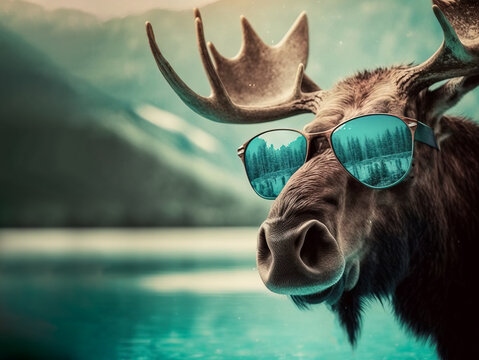

Sarah's Favorita Animal

The moose (in North America) or elk (in Eurasia) (Alces alces) is a member of the New World deer
subfamily and is the only species in the genus Alces. It is the largest and heaviest extant species in
the deer family. Most adult male moose have distinctive broad, palmate ("open-hand shaped") antlers;
most other members of the deer family have antlers with a dendritic ("twig-like") configuration. Moose
typically inhabit boreal forests and temperate broadleaf and mixed forests of the Northern Hemisphere inThe moose (in North America) or elk (in Eurasia) (Alces alces) is a member of the New World deer
subfamily and is the only species in the genus Alces. It is the largest and heaviest extant species in
the deer family. Most adult male moose have distinctive broad, palmate ("open-hand shaped") antlers;
most other members of the deer family have antlers with a dendritic ("twig-like") configuration. Moose
typically inhabit boreal forests and temperate broadleaf and mixed forests of the Northern Hemisphere inThe moose (in North America) or elk (in Eurasia) (Alces alces) is a member of the New World deer
subfamily and is the only species in the genus Alces. It is the largest and heaviest extant
Species in
the deer family. Most adult male moose have distinctive broad, palmate ("open-hand shaped") antlers;
most other members of the deer family have antlers with a dendritic ("twig-like") configuration. Moose
typically inhabit boreal forests and temperate broadleaf and mixed forests of the Northern Hemisphere in
its Wikipedi page
.
Mooseare awesome because...
- They can swim really well
- They can make rally funny noises
- They can close their nostrils
If I were a moose , would...
- Eat lots of lettuce
- Cary little animals on my antlers
- Swim to Alaska
Moose Video